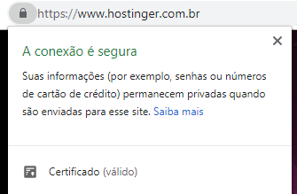
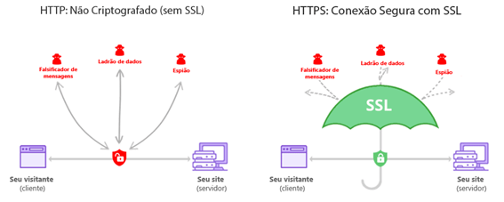
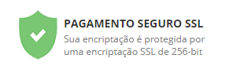
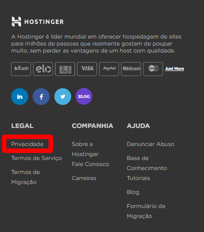

1. Confira o Domínio e a URL
O domínio do site é o endereço que você digitou para chegar nele, localizado na barra do navegador. Um site profissional certamente terá um domínio profissional, que te passe confiança e credibilidade.
Outra coisa a ser observada no endereço, é o tão necessário S no HTTPS.

Entenda : URL`s são emitidas por HTTP (Hypertext Transfer Protocol) ou HTTPS (Hypertext Transfer Protocol Secure). O HTTPS é uma extensão segura do HTTP. E somente os sites que possuem certificado SSL/TLS podem utilizar o protocolo HTTPS para estabelecer uma comunicação segura com o servidor. Veja o gráfico:

Uma das formas de como saber se um site é seguro, é verificando se este site possui o certificado SSL. Certificados SSL/TLS emitem uma chave criptográfica à informação. Com isso, os dados podem ser transferidos com segurança e protegidos de acesso de terceiros.
2. Pesquise a Reputação e Histórico do Site
O que estão falando desse site e dessa empresa na internet? Uma simples consulta no Google ou no buscador de sua preferência poderá te trazer resultados impressionantes sobre o passado de um site. Consulte.
Atente-se para consultar fontes confiáveis.
O Google Meu Negócio pode ser um começo. Este serviço do Google está disponível para todos, usuários e empresas, e contém informações valiosas para te ajudar a identificar se um site é seguro.
3. Busque por Selos de Segurança
Selos de segurança certificam que um site é seguro pelo órgão emissor do selo. Pode ser um selo do certificado SSL ou de outros emissores. Esses selos podem ser encontrados no fim da página ou durante o processo de compra no carrinho.

Atente-se! Sites maliciosos podem simplesmente adicionar a imagem do selo sem de fato possuir a certificação. Por isso, não confie apenas neste sinal.
4. Consulte a Política de Privacidade
A Política de Privacidade de um site deve ser clara sobre quais os dados que o site coleta e armazena, e para quais fins são usados.

Isso assegura que este site está operando conforme a lei e regulamentos locais onde atua, como a GDPR.
5. Confirme as Informações de Contato
Consulte no Google Meu Negócio, como mostramos no tópico 2, mas também veja dentro do próprio site. Geralmente, na página “Sobre” você encontrará informações sobre a história da empresa e endereços, ou no rodapé.
Um site seguro não terá problema em divulgar suas informações como endereço, local onde atua, quem são as pessoas responsáveis ali. Isso não quer dizer que eles estão te protegendo por simplesmente passar informações de contato, mas é uma segurança em saber que você terá com a quem recorrer caso precise.
6. Proteja-se de Vírus
E se tem algo que acontece e nem sempre está visível aos olhos são vírus e malwares.
Mesmo conferindo e atestando todos os sinais que destacamos aqui, um site pode estar infectado por um malware. Para saber se este é o caso, veja alguns sinais:
1. Avisos de sites infectados dos próprios navegadores.
2. Sites suspeitos com erros de ortografia e gramática, com comunicação apelativa geralmente protegendo o que sabemos ser fora do normal.
3. URL`s suspeitas. Ao para com o mouse em cima de uma URL, você pode saber para onde o link está te direcionando e assim decidir clicar ou não. Clique aqui e veja no canto inferior esquerdo que este link está te levando para a página da Hostinger.
4. Pop-ups suspeitos, aquelas janelas pequenas que abrem na sua tela pedindo para que você tome alguma ação, seja um clique ou que compartilhe alguma informação.
Estas informações foram retiradas diretamente do site hostinger
"Hostinger International, Ltd é um provedor de Hospedagem Web de propriedade de funcionários e registrador de domínio na Internet, estabelecido em 2004. A Hostinger é a empresa-mãe da 000Webhost, Niagahoster e Weblink."